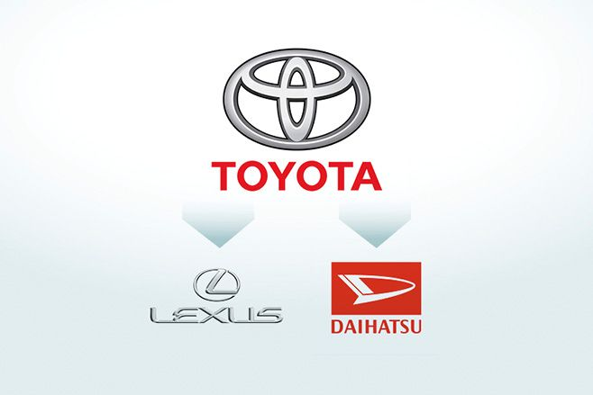

Toyota Group Corporation
La historia de Toyota comienza en los años 20 y se remonta al fundador de la marca: Sakichi Toyoda. Toyoda inventó un telar automático llamado «Toyota Model G».
A partir de este primer modelo, construyó una serie de telares automáticos industriales que resultaron ser todo un éxito.
Gracias al éxito de los telares, Toyoda vendió la patente y consiguió dinero para fundar una división automovilística independiente de Toyota Industries;
por entonces, Toyoda Automatic Loom Works, Ltd.
La compañía original la fundó Sakichi Toyoda en 1926. Pero fue su hijo mayor, Kiichiro, quien creó la división automovilística,
la Toyota Motor Company. Gracias a que la compañía fue capaz de trazar una serie de estrategias que permitieron su expansión más allá de Japón,
hoy Toyota es una marca líder presente en todo el mundo.
Marcas que pertenecen a este grupo
A este grupo pertenecen:

Volver